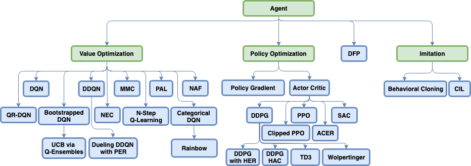

Selecting an Algorithm¶
As you probably already noticed, Coach has a lot of algorithms implemented into it:
{kind=link}
“ok that’s prefect, but I am trying to build a solution for my application, how do I select the right algorithm?”
We collected some guidelines for how to choose the right algorithm for your application. Answer the following questions to see what are the best algorithms for your task. The algorithms are ordered by their release date in descending order.
Continuous actions
Can you collect new data for your task dynamically?
Do you have a simulator for your task?
Learns action values for discrete actions, and allows learning from a replay buffer with old experiences
Combines multiple recent innovations on top of DQN for discrete controls, and achieves much better results on known benchmarks
Works only for continuous actions, and uses hierarchy of agents to make the learning more simple
An improvement over DQN, which learns more accurate action values, and therefore achieves better results on known benchmarks
Works only for discrete actions, by learning to predict the future values of a set of measurements from the environment, and then using a goal vector to weight the importance of each of the measurements
A simple modification to DQN, which instead of learning action values only by bootstrapping the current action value prediction, it mixes in the total discounted return as well. This helps learn the correct action values faster, and is particularly useful for environments with delayed rewards.
An improvement over DQN, that tries to deal with the approximation errors present in reinforcement learning by increasing the gap between the value of the best action and the second best action.
A variant of Q learning for continuous control.
Uses a memory to "memorize" its experience and learn much faster by querying the memory on newly seen states.
Uses quantile regression to learn a distribution over the action values instead of only their mean. This boosts performance on known benchmarks.
Uses an ensemble of DQN networks, where each network learns from a different subset of the experience in order to improve exploration.
A variant of Q learning that uses bootstrapping of N steps ahead, instead of 1 step. Doing this makes the algorithm on-policy and therefore requires having multiple workers training in parallel in order for it to work well.
Learns a distribution over the action values instead of only their mean. This boosts performance on known algorithms but requires knowing the range of possible values for the accumulated rewards before hand.
Based on the REINFORCE algorithm, this algorithm learn a probability distribution over the actions. This is the most simple algorithm available in Coach, but also has the worse results.
Combines REINFORCE with a learned baseline (Critic) to improve stability of learning. It also introduced the parallel learning of multiple workers to speed up data collection and improve the learning stability and speed, both for discrete and continuous action spaces.
An actor critic scheme for continuous action spaces which assumes that the policy is deterministic, and therefore it is able to use a replay buffer in order to improve sample efficiency.
An actor critic scheme which uses bounded updates to the policy in order to make the learning process very stable.
A simplification of PPO, that reduces the code complexity while achieving similar results.
The simplest form of imitation learning. Uses supervised learning on a dataset of expert demonstrations in order to imitate the expert behavior.
A variant of behavioral cloning, where the learned policy is disassembled to several skills (such as turning left or right in an intersection), and each skill is learned separately from the human demonstrations.
1. Does your environment have a discrete or continuous action space?¶
Some reinforcement learning algorithms work only for discrete action spaces, where the agent needs to select one out of several possible actions. Other algorithms work only for continuous action spaces, where there are infinite possible actions, but there is some spatial relationship between the actions. And there are some algorithms that can be applied in both cases. The available algorithms highly depend on the task at hand.
2. Is collecting more samples from your environment painful?¶
Reinforcement learning algorithm are notoriously known for the amount of samples they need for training. Typically, on-policy algorithms are much less sample efficient compared to off-policy algorithms. But there are other algorithmic features that allow improving the sample efficiency even more, like using a DND in NEC, or using Hindsight Experience Replay. It is hard to say which algorithm is the most sample efficient, but we can at least say which ones are not sample efficient.
3. Do you have a simulator that can be parallelized across multiple processes or nodes?¶
Parallelizing training across multiple workers which are located on the same node or on different nodes is a technique that has been introduced in recent years and achieved a lot of success in improving the results of multiple algorithms. As part of this, there are some algorithms that don’t work well without being parallelized with multiple workers working in parallel, which requires having a simulator for each worker.
4. Do you have human demonstrations for solving the task?¶
If human demonstrations are available for a task, most of the time it would be better to use those instead of training using regular reinforcement learning from scratch. To use human demonstrations we have implemented several tools and algorithms for imitation learning in Coach.